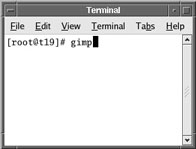
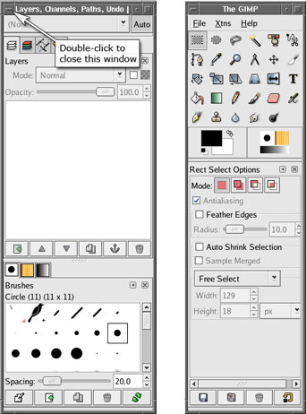

Illustration 1:
Starting Gimp

NOTE:
Gimp often launches in two windows (
Illustration 2
). The
Layers, Channels, Paths, Undo
window will not be used and can be safely closed.
Illustration 2:
Gimp Windows
